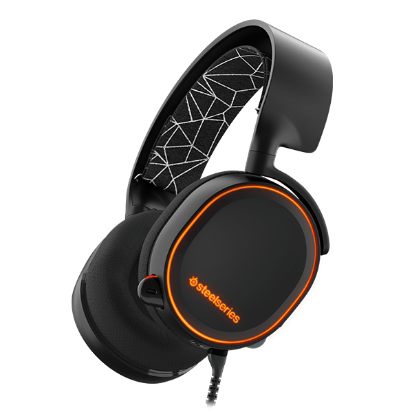

Resources
This is my resources page. I will link all the things I find are the best in that catagory and include a couple of opinions.
Music:

As a person who loves chiptune music, I had to share this resource. I love chiptune music because I love retro-sounding, video game music, and 8-bit music, or chiptune music, definitly gives off that retro-y vibe. Opinions aside, I used to use 8bitcollective, which was not only one of the hugest collections of chiptune music out there, but all the music was free to download! Unfortunately, their site is down. It has been since 2012. Luckily, some kind people at 2xAA, another big name when it comes to chiptnue music, were able to release an archive of the collection here, just like the old one. You can now get back to enjoying those 5-channel songs!
Headphones:
Now, on the subject of music, I'd like to discuss headphones. As a person who loves video games, not only is it good to have good sound, but also a good microphone to communicate with others. After looking around for a while, I've come to the conclusion that the Arctis 5 by SteelSeries is by far one of the best set of headphones I've ever come across. Not only does it have sound quality of studio headphones (which can end up costing up to $1,500), but also a microphone with ClearCast technology, a technology that cancels out most noise around you automatically. (They have a whole article explaining how it works here) It doesn't end there either. The headphones have slick design, customization, and even RGB lighting, something only dreamed of by some. For $100 only, I think this product is definitly worth the money.